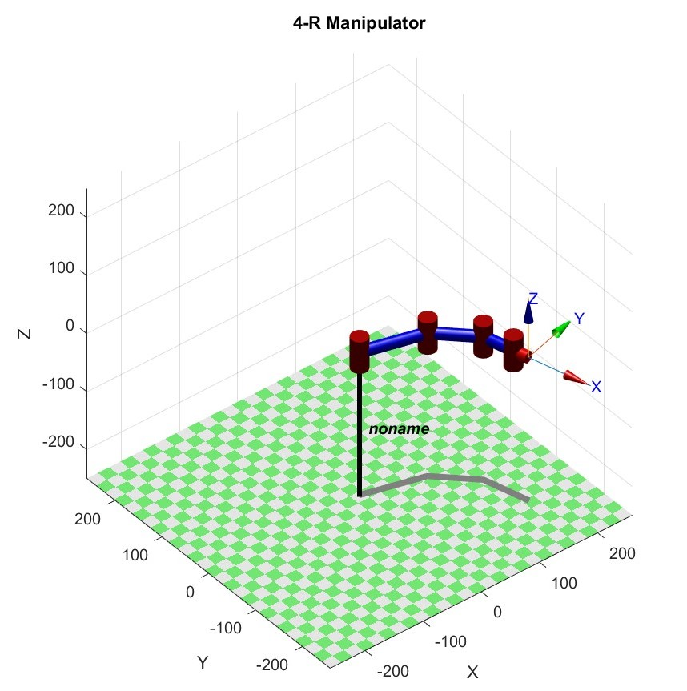
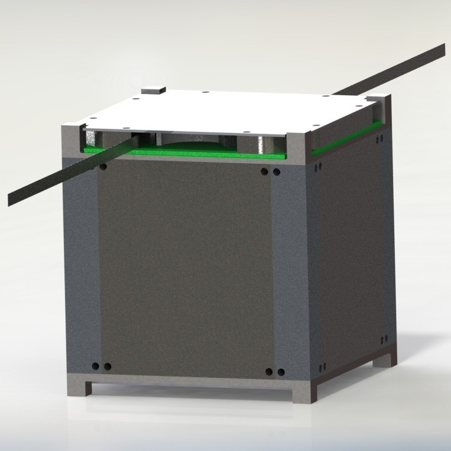

|
Ashay Wakode I'm a system engineer at Technology Innovation Institue in Abu Dhabi, UAE, where I work on cooperative control and guidance of fixed-wing UAVs. I did my Bachelor's and Master's at Indian Institue Of Technology Bombay, India, where I was advised by Jitendra Malik. |

|
ResearchI'm interested in Multi-Agent Planning and Control. |
|
|
MAP3R: Multi-agent Persistence Priority Patrolling with
Recharging
Ashay Wakode, Vishnu Chipade, Arpita Sinha ECCV, 2024 project page / video / arXiv In this paper I'm exploring MAP3R |
|
|
Online Coverage for unstructured enironment using Space Filling curves
Ashay Wakode, Arpita Sinha ACM TOG, 2021 project page / arXiv / video Embedding a convnet within a predefined texture atlas enables simultaneous view synthesis and relighting. |
|  |
Terminal Singular Value based Inverse Kinematic
formulation for Redundant Serial Manipulator
Ashay Wakode, Arpita Sinha, Anirban Guha Master's Thesis, August 2022 Using the relative motions of stars we can accurately estimate the date of origin of historical astronomical images. |
|  |
Sanket - Technology Demonstration of Antenna Deployment System on PSLV
Stage 4 Orbital Platform
Karan Jagdale, Mrigi Munjal, Prashant Kurrey, Ashay Wakode, Pushkar Lohiya, Puneet Shrivas, Anmol Sikka, Sanskriti Bhansali, Abhishek Kejriwal, Amrutha Lakshmi Vadladi, Ankit Kumar, Atharva Savarkar, Hemant Dilip Gidewar, Hrithik Agarwal, Mohit Dhaka, Pranav G Kasat, Ritul Shinde, Shreya Laddha, Adesh Yadav, Akshat Mehta, Dhanush S, Ishan Phansalkar, Jayant Saboo, Kriti Verma, Leena Chaudhari, Navjit Debnath, Shreeya Shrikant Athaley, Shreyas Sabnis, Vidushi Verma, Vineet Gala, Yatin Jindal 2nd National Conference on Small Satellite Technology and Applications-2020 We developed Sanket (1U Cubesat) to qualify the team's Antenna Deployment Syetem in Ultra High Frequency band to TRL-7 in Low earth Orbit. |

|
Online Evasive Strategy for Aerial Survey using Sierpinski curve
Ashay Wakode, Arpita Sinha IFAC Symposium on Automatic Control in Aerospace (ACA 2022) In this Paper we did someting |
|
Survey and Analysis of Payloads for Missions on PSLV's Orbital
Platform
Aniruddha R Ranade, Anmol Sikka, Sanskriti Bhansali, Karan S Jagdale, Puneet Shrivas, Piyush Jirwankar, Mayuresh Bhattu, Aryan Lall, Prashant Kurrey, Ashay Wakode, Dhananjay Tiwari, Niket Parikh, Neilabh Banzal, KT Prajwal Prathiksh, Shaun Zacharia, Millen Kanabar, Shreya Laddha, Atharv V Savarkar, Amrutha L Vadladi, Mohit Dhaka, Yuktee Gupta, Abhishek Kejriwal, Hrithik Agrawal, Aakash V, Ritul Shinde, Mitalee Oza, Rohit K Yadav, Rateesh A Sabde, Chinmay Bharti, Pranav G Kasat, Bhavini Jeloka, Rikin Shah 2nd National Conference on Small Satellite Technology and Applications-2020 We developed Sanket (1U Cubesat) to qualify the team's Antenna Deployment Syetem in Ultra High Frequency band to TRL-7 in Low earth Orbit. |
|
This website is forked from Jon Barron website. Feel free to use my fork. |